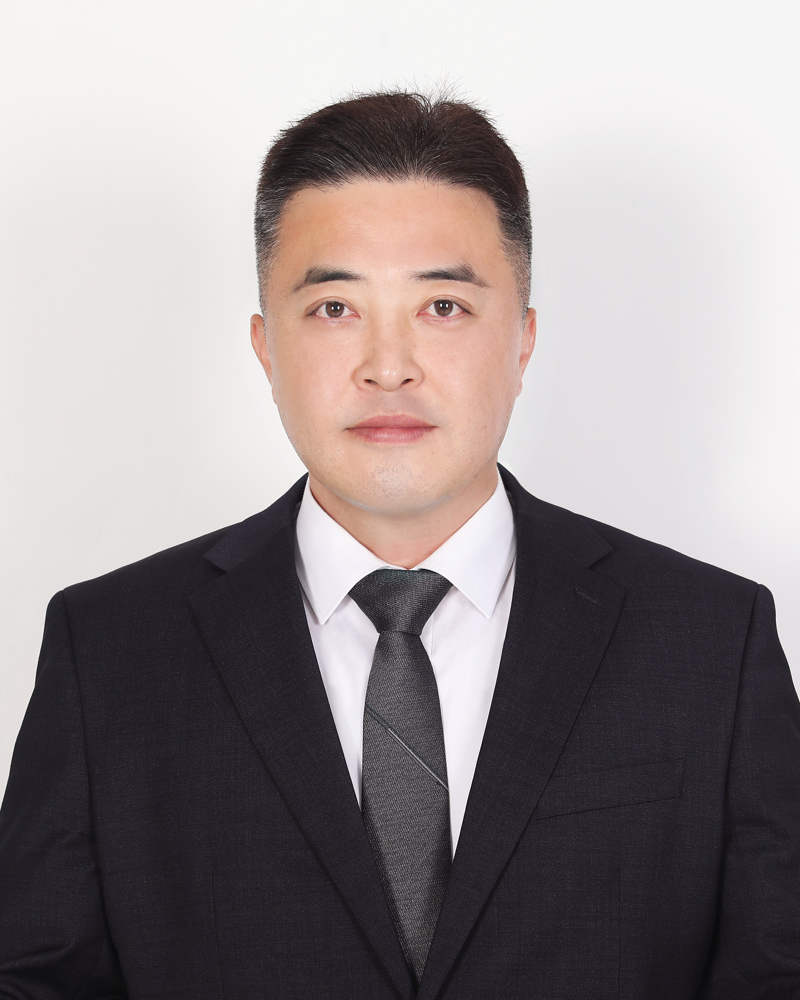

Pre-Conference Workshops
Dina Tsagari
Dina Tsagari, PhD, is Professor, Department of Primary and Secondary Teacher Education, Oslo Metropolitan University, Norway. She has also worked for the University of Cyprus, Greek Open University and Polytechnic University of Hong Kong. Her research interests include language testing and assessment, materials design and evaluation, differentiated instruction, multilingualism, distance education, learning difficulties and inclusive education. She is the editor and author of numerous books, journal papers, book chapters, project reports etc. She coordinates research groups, e.g., CBLA SIG – EALTA, EnA OsloMet and is involved in EU-funded and other research projects
Providing equitable and high-quality language education requires that teachers are able to recognise and respond to the diverse abilities and learning needs of students, including learners with special educational needs (SEN) and specific learning difficulties (SpLDs). In English language classrooms worldwide, teachers increasingly encounter learners with difficulties such as dyslexia and attention deficit hyperactivity disorder (ADHD), which may affect attention control, language processing, reading, writing, and assessment performance. However, many language teachers report limited training in how to assess these learners in fair and inclusive ways.
This workshop addresses the challenge of inclusive assessment of English language learners with SpLDs. Drawing on research in language assessment, inclusive pedagogy, and Universal Design for Learning (UDL), the workshop introduces participants to key characteristics of common SpLDs and explores how these may influence both language learning and language assessment.
The session combines conceptual input, illustrative examples from classroom practice, and interactive discussion tasks. Participants will first be introduced to the nature of specific learning difficulties and their potential impact on English language learning. The workshop will then explore how assessment practices can be adapted through differentiation of materials, tasks, processes, and products, as well as through reasonable accommodations designed to ensure equitable opportunities for demonstrating language ability.
Participants will be invited to reflect on their own assessment practices and to consider practical strategies for designing inclusive classroom-based assessment. The workshop is suitable for language teachers, teacher educators, and researchers in TESOL or applied linguistics, and assumes general familiarity with language teaching but no prior specialist knowledge of special educational needs.
Intended Learning Outcomes:By the end of the workshop, participants will be able to:
- understand key characteristics of common specific learning difficulties (e.g., dyslexia, ADHD) and their implications for English language learning and assessment
- identify potential barriers in traditional language assessment practices for learners with SpLDs
- apply principles of Universal Design for Learning (UDL) and differentiation to make classroom-based assessment more inclusive
- design practical accommodations and assessment strategies that promote fairness and equitable participation for learners with diverse needs

Gwan-Hyeok Im
Dr. Gwan-Hyeok Im completed his master’s degree at the University of Melbourne in Australia and earned his Ph.D. from Queen’s University in Canada. He is currently an assistant professor in the Department of English Language and Culture at Konkuk University Glocal Campus in South Korea. His research focuses on language assessment, particularly validity and validation in second language testing. He is also interested in English-medium instruction (EMI), digital literacy, and the integration of artificial intelligence and emerging technologies in language education. His work explores how innovative learning environments can enhance language learning and intercultural understanding in higher education.
The central focus of this workshop is to introduce the key concepts and practices of validity and validation in educational assessment, with particular attention to second language testing. The workshop addresses a common challenge in language assessment research and practice: many teachers and early-career researchers use tests without fully understanding how interpretations of test scores should be supported with evidence. To address this issue, the workshop conceptualizes assessment as an inferential process in which judgments about learners’ abilities are made based on evidence rather than absolute certainty.
The workshop adopts a contemporary validity framework that integrates traditional psychometric perspectives with an argument-based approach to validation. In particular, it draws on the view that validity represents a unified evaluative judgment supported by multiple sources of evidence. The workshop introduces participants to argument-based validation by demonstrating how claims about test score interpretations can be articulated through claims, assumptions, evidence, and potential rebuttals.
The session combines several forms of engagement. It begins with conceptual input that introduces core ideas such as assessment, validity, and validation. This is followed by data illustrations using examples from established language assessments to demonstrate how evidence is gathered and interpreted. Participants will then engage in guided analysis of assessment tasks to identify possible sources of measurement error and examine how test use may influence educational decisions. Interactive activities will allow participants to reflect on assessments they currently use and to collaboratively construct simple validity arguments.
The workshop is primarily designed for graduate students, early-career researchers, and language teachers who are interested in language assessment and educational measurement. No advanced statistical background is required, although participants are expected to have a general familiarity with language testing or classroom assessment contexts.
Intended Learning Outcomes:- Understand the basic concepts of validity and validation in language assessment.
- Explain how interpretations of test scores should be supported with evidence.
- Identify possible sources of error and consequences of test use in language assessments.
- Develop a simple validity argument for a language test or assessment task.
Yuanyue Hao
Yuanyue Hao is currently a final-year doctoral student in the Department of Education, University of Oxford. His doctoral research was fully funded by the Swire Scholarship and recognised by Duolingo English Tests’ Doctoral Dissertation Awards. With initial research focus on human-mediated pronunciation assessment, he has gradually developed his interests in automated pronunciation assessment, algorithmic fairness, and auditing algorithms. He is also interested in rigorous application of advanced quantitative methods in applied linguistic research, such as machine learning and causal inference. Moreover, he is interested in bringing philosophical discussions into language assessment and applied linguistic research.
Deep neural networks (DNN) have been shown to be a potent machine learning model to make predictions in various fields such as speech recognition and automated translation. One of the variants, the Transformer architecture, underpins popular large language models such as ChatGPT, Claude, and DeepSeek. DNNs-based models have also been widely used in speech recognition and automated speaking assessment. Therefore, understanding the fundamentals of DNNs has become crucial to critically examine their applications in automated language assessment. This workshop aims to uncover the nature of DNNs, explain key terminologies and stages in training DNNs, and engage with this method with a critical perspective. In addition to conceptual explanations, hands-on coding practice using Python will be provided to analyse non-linear relationships among variables that are of central interest to language testers.
In the first part, the workshop will discuss the relationships between DNNs and “good-old” linear regression, as well as the differences between the traditional statistical inference and machine learning paradigm. It will then introduce the inherent nature of DNNs, i.e., piecewise linear functions, using visualisations. Key terminologies such as cross-validation, weights, biases, activation function, loss function, optimization, and hyperparameters (including learning rate, epoch, batch size) will also be introduced. Following the first conceptual half, the second half will feature a hands-on coding analysis of a toy example, i.e., the non-linear relationship between language proficiency and test anxiety. Step-by-step guided practice will be provided to explain the Python codes for building a DNN model. The workshop will conclude with some philosophical discussions about the affordances and limitations of DNNs, such as algorithmic fairness, interpretability, transparency, and “mere correlation” issues.
No prior knowledge of machine learning nor experience with Python is required. However, some knowledge of linear regression and algebra (mostly high-school level) is preferred to ensure better understanding.
Intended Learning Outcomes:- Understand the paradigmatic differences between traditional statistical inference and machine learning;
- Understand the inherent nature of deep learning and neural networks;
- Understand the key terms of deep learning, such as weights, biases, activation function, loss function, optimization, and bias-variance trade-off;
- Build preliminary neural networks to make predictions using your own datasets
Participants are expected to bring their own laptops. Python codes will be provided in the form of Google Colab notebook prior to the workshop. To access, run, and edit the notebook, a valid Google account is required. The conceptual part is largely based on Prince’s (2023) Understanding deep learning (freely downloadable from https://udlbook.github.io/udlbook/). Pre-reading is not compulsory but recommended to have a better basis of conceptual understanding before the workshop.